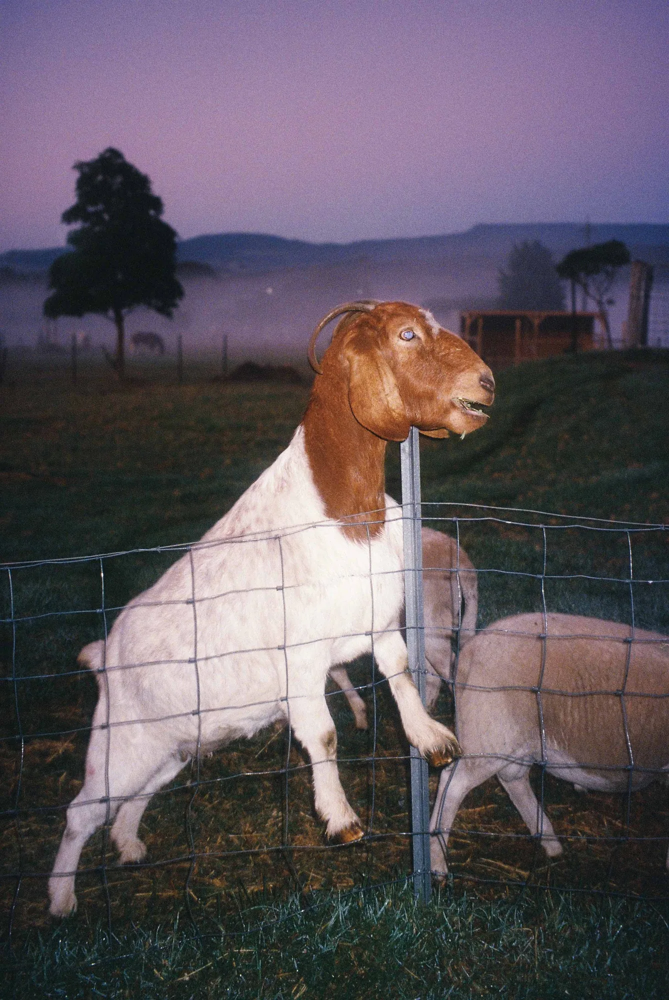
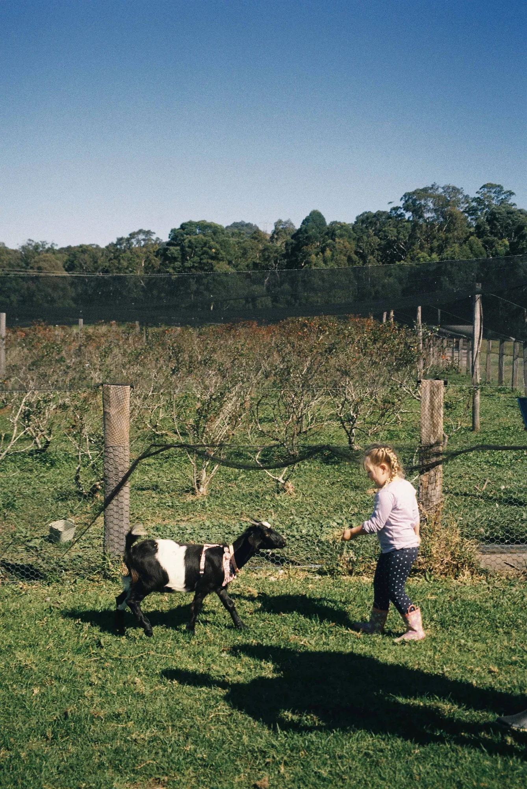
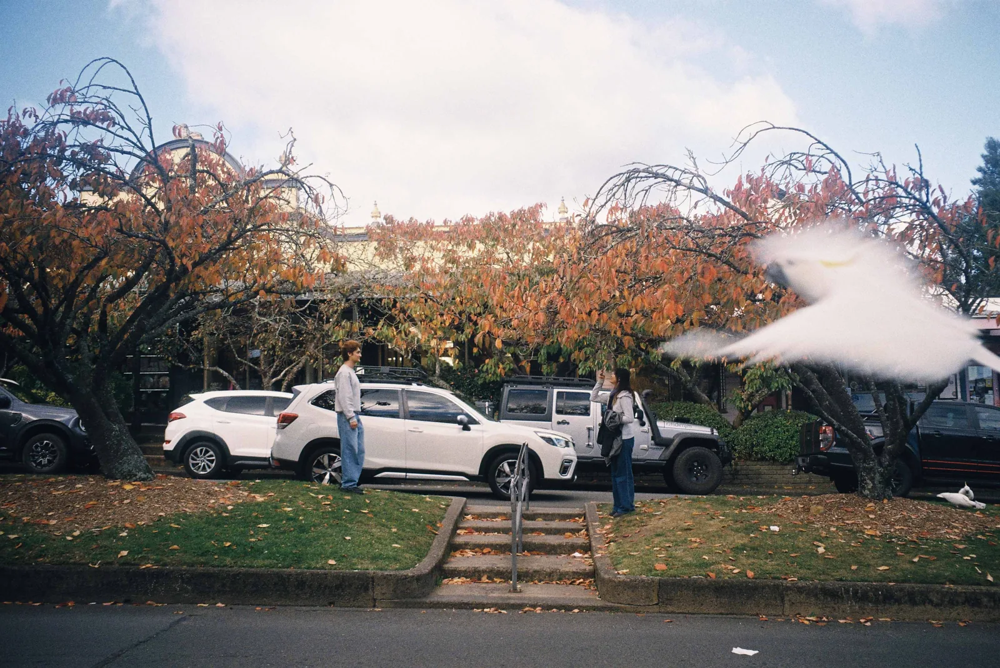
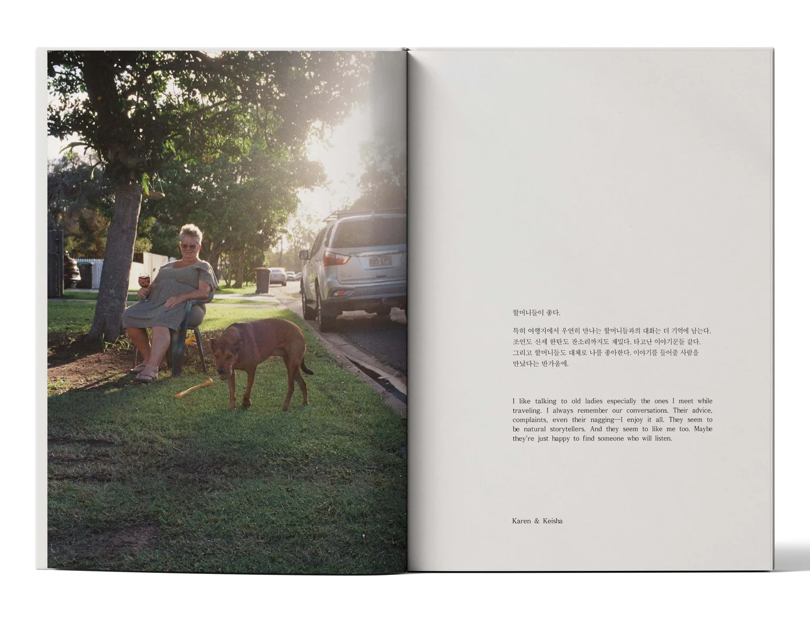
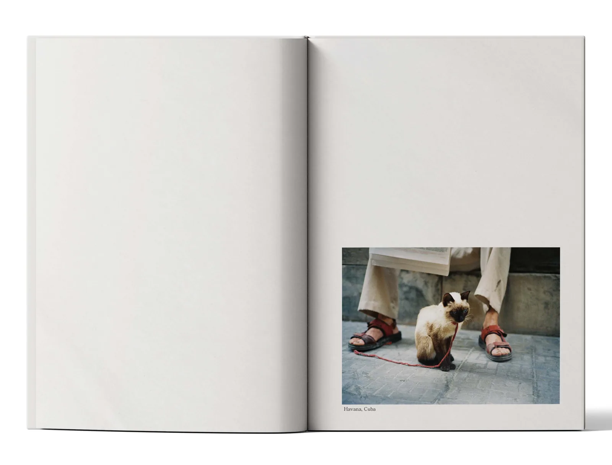
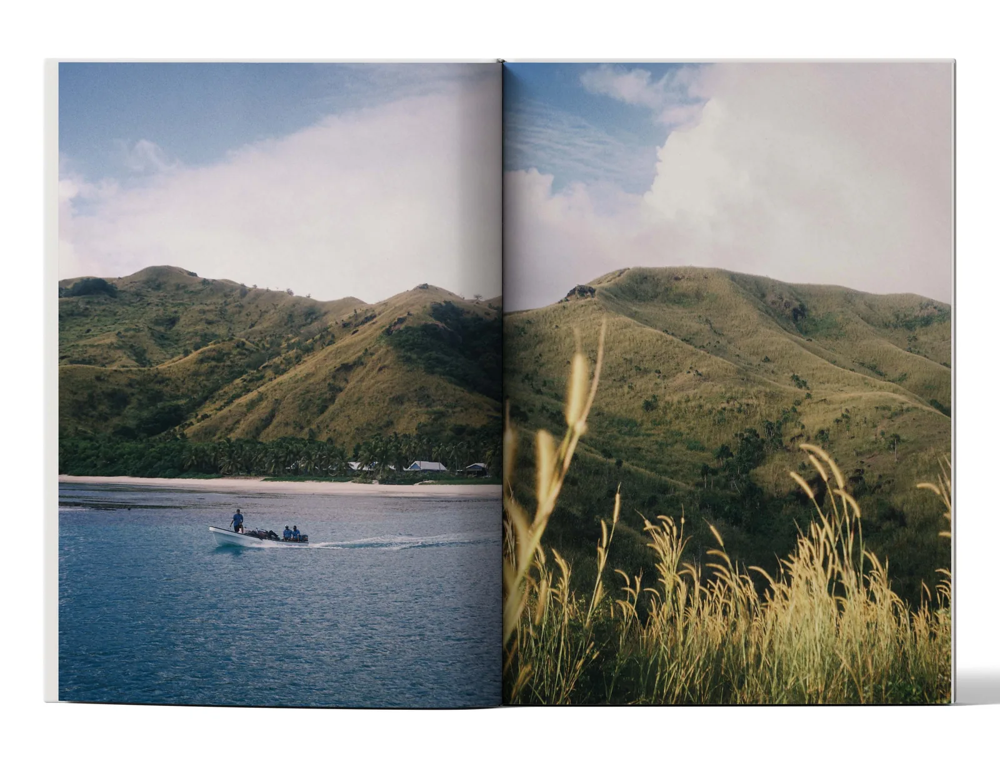
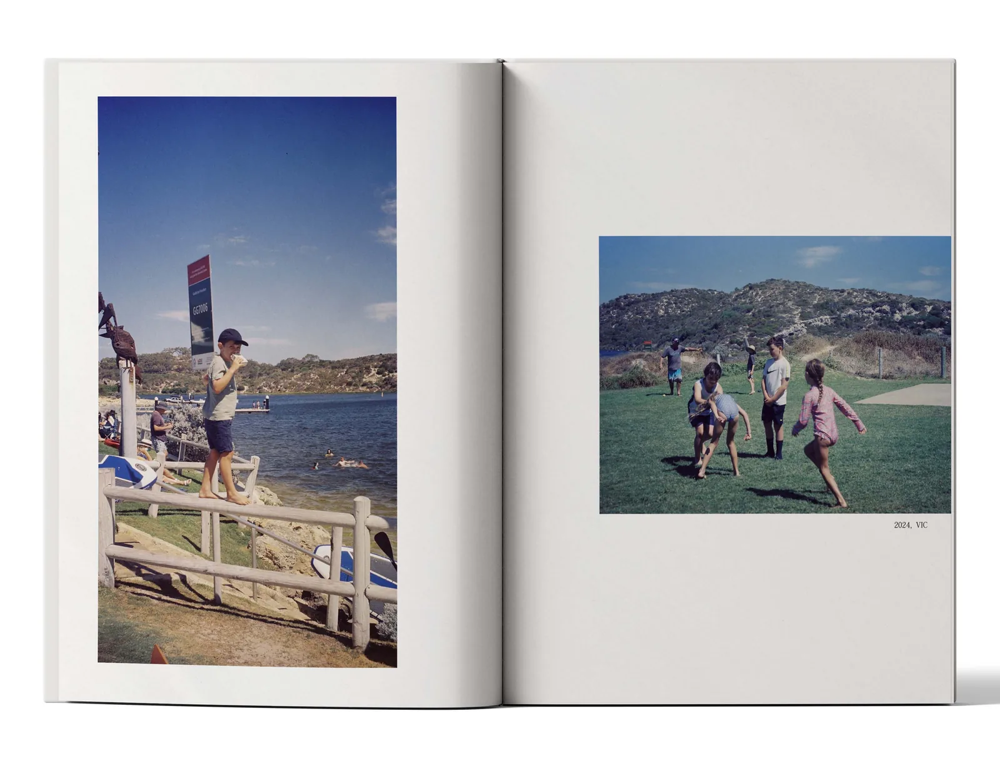

유화정의 첫 개인전 《얼굴들》이 10월 21일 수요일에 열린다. 27일 화요일까지 이레 동안이고, 장소는 서울 마포구 성산동의 꼬메아미꼬 갤러리다. 영문 제목은 〈FACES OF ALL THINGS〉. 포스터에는 2019년부터 2026년까지라는 기간이 함께 적혀 있다.
여덟 해 동안 모은 장면
작가가 Threads 에 올린 안내에 따르면 8년 동안 찍은 필름을 모아 여는 첫 전시다. 여러 곳을 다니며 만난 사람과 동물, 풍경, 그리고 그 사이에서 생긴 순간들을 사진과 글로 엮었다. 소개글은 "특별한 사건보다는 지나고 나서 오래 기억에 남는 것들"을 모았다고 적는다. 해변에서 만난 동물, 우연히 나눈 대화, 여행지의 풍경, 별것 아닌 하루의 장면이 그 목록이다.

제목의 얼굴은 사람에게서 멈추지 않는다. 소개글은 동물의 얼굴, 바다의 얼굴, 도시의 얼굴, 머물렀던 장소의 얼굴까지 한 줄에 놓는다. 포스터부터 그렇다. 화면 가운데를 차지한 것은 철망 너머로 다가오는 조랑말이다. 앞쪽에는 초점이 나간 장미가 걸려 있다.


먼저 공개된 사진 세 장에도 그 생각이 보인다. 새벽빛 아래 철망에 앞발을 건 염소는 정면을 본다. 하네스를 맨 염소와 아이는 같은 쪽으로 걷는다. 가로수 길 사진에서는 사람 둘보다 화면 끝으로 날아드는 앵무새가 먼저 눈에 걸린다. 누가 주인공인지 미리 정해 두지 않은 사진들이다.
첫 사진 에세이집
전시에 맞춰 첫 사진 에세이집도 독립출판으로 낼 예정이다. 공개된 견본 펼침면을 보면 사진 한 면과 글 한 면을 마주 세우거나, 사진 두 장을 양쪽에 나란히 놓았다. 글은 한국어와 영어를 위아래로 함께 실었다.

한 쪽에는 「할머니들이 좋다」로 시작하는 짧은 글이 있다.
특히 여행지에서 우연히 만나는 할머니들과의 대화는 더 기억에 남는다. 조언도 신세 한탄도 잔소리까지도 재밌다. 타고난 이야기꾼들 같다. 그리고 할머니들도 대체로 나를 좋아한다. 이야기를 들어줄 사람을 만났다는 반가움에.
글 아래에는 Karen & Keisha 라는 이름이 붙어 있다. 맞은편 사진은 나무 그늘 아래 의자에 앉은 사람과 그 앞에 선 갈색 개다.



다른 면에는 지명이나 해가 짧게 붙는다. 쿠바 아바나의 길바닥에서 붉은 끈을 맨 고양이를 찍은 면에는 「Havana, Cuba」가, 잔디밭의 아이들 사진에는 「2024, VIC」가 적혔다. 판형과 쪽수, 가격, 판매처는 아직 공개되지 않았다. 전시장에서 먼저 만날 수 있을지는 작가의 공지를 지켜볼 일이다.
작가가 전시장에 있다
작가는 전시 기간 동안 전시장에 머물 예정이라고 밝혔다. 꼬메아미꼬 갤러리는 연남동과 망원동 사이, 성산동 골목에 있는 카페 겸 전시 공간이다. 사진 한 장의 사연을 찍은 사람에게 직접 물어볼 수 있다. 어느 얼굴 앞에서 가장 오래 서 있게 될까?
관람 정보
- 기간 2026년 10월 21일 수요일 ~ 10월 27일 화요일
- 시간 12:00 ~ 18:00
- 장소 꼬메아미꼬 갤러리 (Comeamico Gallery), 서울 마포구 성미산로15길 97
- 안내 작가의 Threads 안내 ↗
평일과 주말이 모두 끼어 있다. 주말에 갈 수 있는 날은 24일 토요일과 25일 일요일 이틀이다.